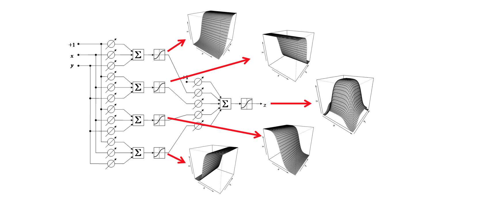

Opcional — Regresión no lineal univariada con perceptrones multicapa en R¶
En este documento se abordan las redes de perceptrones continuos completamente conectados con propagación de la señal hacia adelante; esta puede ser la arquitectura de red neuronal artificial más ampliamente utilizada en las dos últimas décadas. Como caso de aplicación se construye un modelo de regresión no lineal univariada. Al finalizar este documento, el lecto debe estar en capacidad de:
Describir el modelo matemático, la operación y los casos de uso de un perceptrón multicapa.
Implementar un perceptrón multicapa en R y en TensorFlow.
Aplicar la red implementada a un caso de regresión no lineal.
Definición del problema¶
Se desea construir un modelo de regresión no lineal para la siguiente muestra de 31 observaciones de \((x, y)\) con el fin de poder interpolar el valor de la variable de respuesta para valores de \(x\).
[2]:
x <- c(-3.5000, -3.2941, -3.0882, -2.8824, -2.6765,
-2.4706, -2.2647, -2.0588, -1.8529, -1.6471,
-1.4412, -1.2353, -1.0294, -0.8235, -0.6176,
-0.4118, -0.2059, 0.0000, 0.2059, 0.4118,
0.6176, 0.8235, 1.0294, 1.2353, 1.4412,
1.6471, 1.8529, 2.0588, 2.2647, 2.4706,
2.6765, 2.8824, 3.0882, 3.2941, 3.5000)
d <- c( 0.0000, 0.0000, 0.0001, 0.0002, 0.0008,
0.0022, 0.0059, 0.0144, 0.0323, 0.0664,
0.1253, 0.2174, 0.3466, 0.5075, 0.6828,
0.8440, 0.9585, 1.0000, 0.9585, 0.8440,
0.6828, 0.5075, 0.3466, 0.2174, 0.1253,
0.0664, 0.0323, 0.0144, 0.0059, 0.0022,
0.0008, 0.0002, 0.0001, 0.0000, 0.0000)
La siguiente figura muestra que la relación es no lineal entre las variables de entrada (\(x\)) y salida (\(y\)).
[6]:
options(repr.plot.width=4, repr.plot.height=4)
plot(x, d, type='p', pch=21, bg='red')
grid()

Solución¶
Arquitectura¶
El perceptrón multicapa se obtiene al agrupar varios perceptrones continuos en capas para luego conectar las capas entre sí, una a continuación de la siguiente. Las neuronas de cada capa se conectan a todas y cada una de las neuronas de la siguiente capa. Solo hay conexiones entre capas adyacentes.
Se consideran tres tipos de capas por su ubicación (véase la figura de abajo):
Capa de entrada: son nodos que simplemente capturan la información de entrada y la transmiten directamente a la siguiente capa sin realizar ningún tipo de procesamiento. Hay tantas neuronas de entrada como variables considere el modelo. Corresponden a la capa con las entradas \(x\) y \(y\) de la figura de abajo.
Capas ocultas de procesamiento: son capas internas usualmente no visibles por el usuario que realizan el procesamiento de la información. En la figura de abajo, hay una sola capa oculta con cuatro neuronas.
Capa de salida: Entrega la señal de salida al usuario. Tiene tantas neuronas como variables de salida tenga el sistema. En la figura de abajo, corresponde a la neurona de la derecha que da como salida la variable \(z\).
Tal como se indicó, en la figura de abajo se presenta el diagrama esquemático para un modelo con dos entradas \((x, y)\), una capa oculta con cuatro neuronas, y una capa de salida.
Capacidad de aprendizaje¶
Un perceptrón multicapa puede aproximar cualquier función arbitraria simplemente agregando neuronas a la capa oculta. En la siguiente figura, se muestran las superficies generadas para por cada una de las cuatro neuronas de la capa oculta (las cuatro superficies en forma de S), y como al combinarse en la capa de salida producen la figura de la derecha (que corresponde a la variable \(z\)).

Una pregunta fundamental en redes neuronales es la determinación de cuántas capas ocultas y cuántas neuronas por capa oculta deben usarse. En la figura de abajo se presentan las fronteras de decisión para diferentes configuraciones de una red neuronal para resolver un problema de clasificación.
Un perceptrón simple puede generar una frontera de decisión lineal (figura de la izquierda).
Un perceptrón multicapa puede generar una superficie compacta donde la región sombreada representa una clase y el resto de la superficie representa la otra (figura del centro). Cada uno de los bordes del polígono es generado como la frontera de decisión que produce cada perceptrón de la capa oculta. La neurona de salida implementa la función lógica AND o la función lógica OR. Si cada perceptrón de la capa oculta indica la pertenencia de un punto cualquiera a la región sombreda, entonces la neurona de salida representa un AND (todos los perceptrones de la capa oculta deben indicar que el punto pertenece a la región sombreada). De forma análoga, si los perceptrones de la capa oculta indican la no pertenencia a la región sombreada, entonces, la neurona de salida debe representar un OR. Esto implica (de forma intuitiva) que un perceptrón con una capa oculta puede aproximar cualquier función continua definida en un dominio compacto
Finalmente, una red con dos capas ocultas puede resolver problemas de clasificación donde los elementos de la clase de interés están aglomerados en distintas regiones (ya no hay un dominio compacto). Si se tiene en cuenta que cada región compacta puede ser generada por u perceptrón con una capa oculta, entonces se requieren dos percptrones los cuales son unidos mediante una capa adicional (al final) que representa un OR lógico.

Estimación de los pesos óptimos de la red neuronal¶
La estimación de los parámetros óptimos se realiza mediante el método del descenso acelerado, usualmente minimizando el error cuadrático medio, tal como ya se ha realizado en muchos de los casos anteriores:
La dificultad subyace en la estimación del gradiente algebráico de los pesos de las conexiones respecto al error. La derivación del gradiente está fuera del alcance de este documento y se invita al lector a consultar libros especializados sobre el tema.
Implementación usando R¶
En esta caso se usa la libraría neuralnet la cual ha sido ampliamente usada.
[21]:
library("neuralnet")
## la librería recibe un dataframe
df <- data.frame(x=x, d=d)
## se crea y entrena el modelo
nn <- neuralnet(d ~ x, # usa las misma formulas de los modelos de regresión
data = df, # el dataframe usado
hidden = 3, # neuronas de la capa oculta
act.fct = "logistic", # función de activación
linear.output = TRUE) # función de activación de la capa de salida
# que puede ser lineal o sigmoidea
[22]:
## crea un dataframe de prueba
dftest <- data.frame(x=x)
## pronostica la salida de la red neuronal para el dataframe de prueba
y_pred <- compute(nn, dftest)
## grafica la aproximación de la red neuronal
plot(x, d, type='p', pch=21, bg='red')
lines(x, y_pred$net.result, col = 'black')
grid()

Solución usando TensorFlow¶
En este caso se usa la interfaz a keras.
[1]:
##
## Se importa la librería
##
library(keras)
##
## crea la red neuronal como un modelo secuencial de capas
##
model <- keras_model_sequential()
model %>%
layer_dense(units = 3, # 3 neuronas en la capa oculta
activation = 'sigmoid', # función de activación
input_shape = c(1)) %>% # una neurona de entrada
layer_dense(units = 1, # 1 neurona en la capa de salida
activation = 'sigmoid') # función de activación
##
## imprime un resumen de la arquitectura del modelo
##
summary(model)
________________________________________________________________________________
Layer (type) Output Shape Param #
================================================================================
dense (Dense) (None, 3) 6
________________________________________________________________________________
dense_1 (Dense) (None, 1) 4
================================================================================
Total params: 10
Trainable params: 10
Non-trainable params: 0
________________________________________________________________________________
[11]:
##
## compila el modelo para poder ejecutarlo
##
model %>% compile(
loss = 'mse', ## funcion a minimizar
optimizer = optimizer_sgd(lr = 0.1), ## optimizador
metrics = c('mse') ## metricas de error reportadas
)
##
## entrena el modelo
##
h <- model %>% fit(
x, d, ## patrones de entrenamiento
epochs=25000, ## numero máximo de iteraciones
verbose=0) ## sin reporte de la ejecución del optimizador
options(repr.plot.width=6, repr.plot.height=4)
plot(h$metrics$loss, type = 'l')

[13]:
##
## grafica la evolución del error durante
## la optimizacion
##
plot(x, d, type='p', pch=21, bg='red')
x_pred <- seq(from = -4, to = 4, length.out = 50)
y_pred <- model %>% predict(x_pred)
lines(x_pred, y_pred, col='black', lwd=2)
grid()